Sub-Teams
5 Separate sub-teams each specializing on a different aspect of the tiny house
Executive Committee

Hello, I am a sophomore and I created Team Tiny House
because I've wanted to make a tiny house for a long
time. It is a sustainble solution to climate change and
the housing crisis, which I am passionate about. I look
forward to seeing what this amazing team does!

I am a junior at TJ and am looking forward to raising
awareness of sustainability while creating portable, and
sustainable, homes through Team Tiny House. In my free
time, I like to read, take photos, and listen to music.
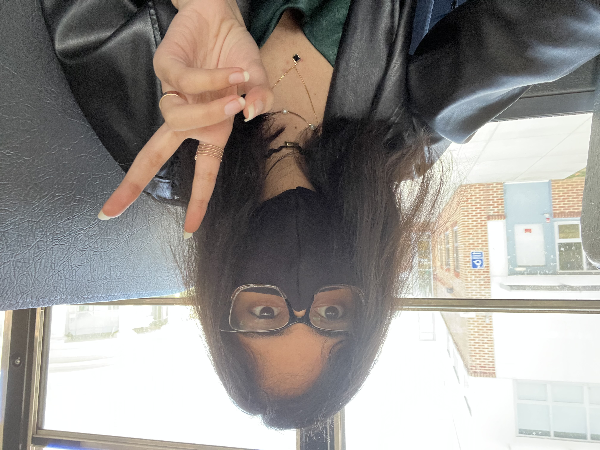
Buisness & Outreach Lead
Shachi
Mahajan
.
Hey, I’m Jerry Mao and I’m a part of the class of 2023.
I like to disassemble electronics, play video games, and
when I find time, I’ll also paint some miniatures. I’d
love to see out tiny house team break some boundaries
with the amenities that we can squeeze into such a small
living space, and we’ll hopefully learn some lessons
regarding sustainable energy along the way!

Hey! I’m the sophomore Systems Subteam lead that loves
robotics, space, environmental tech. I’m excited to be on
Team Tiny House to help educate people about green housing
make cool things doing what I love.

I am currently a sophmore. I joined Team Tiny House
because I am interested in structural and interior design.
I enjoy debate and tennis.
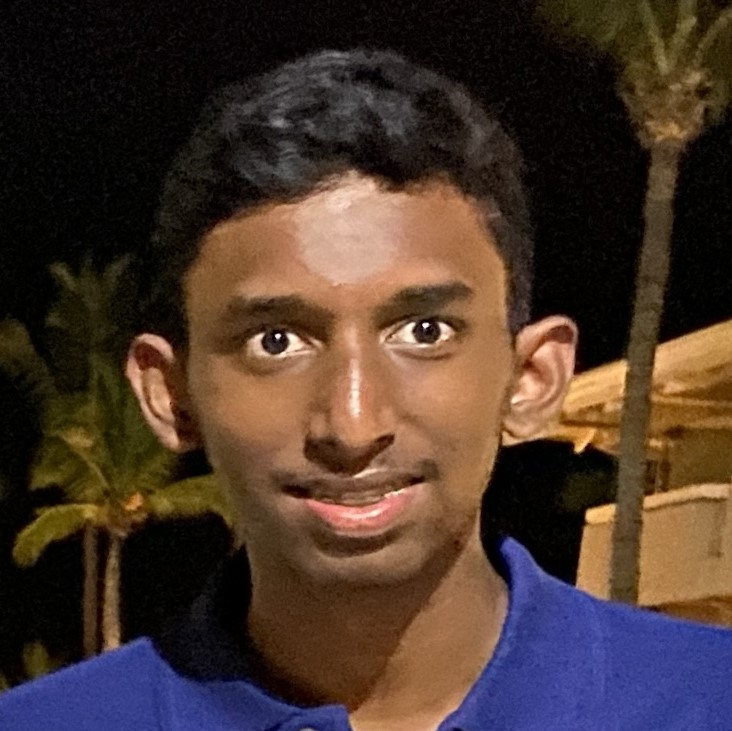
Interior Lead
Amith
Polineni
I'm a sophomore and I joined to innovate new
environmentally friendly technology. I will save the world
one robot at a time. I'm interested in Mechatronics
and Economics, and I enjoy programming, robotics, and
rocketry. (amithp.com)
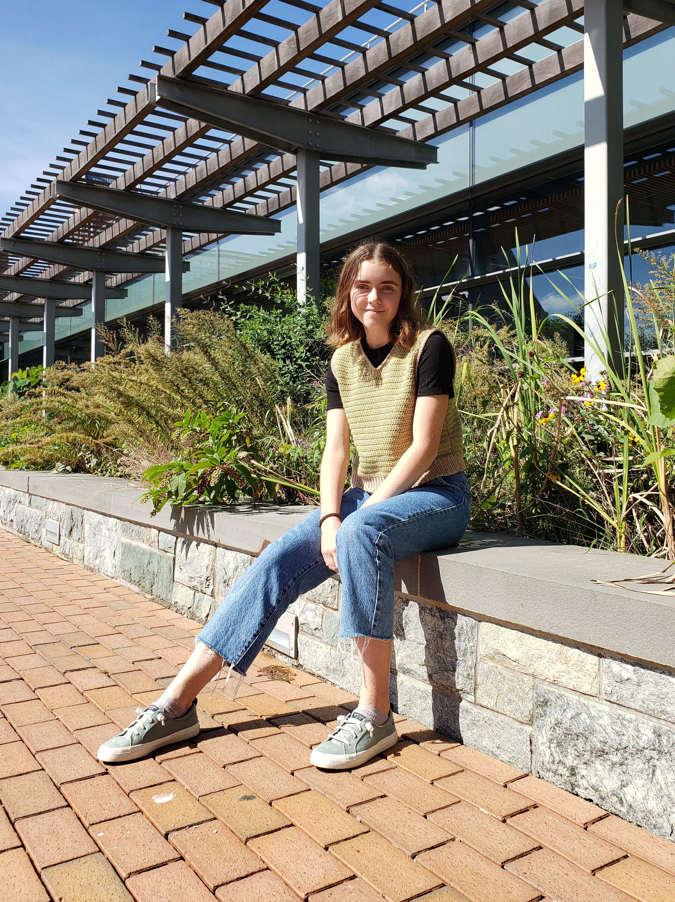
INTERIOR Lead
Marta
Anvelt
I am a freshman and Interior Construction Subteam Lead.
I joined Team Tiny House to actively contribute towards
a more sustainable future for all of us and to encourage
more people to have a positive influence on the
environment! In my free time, I enjoy crocheting,
reading, gardening, biking, and playing with my cats and
dog.
Business
The Business/Outreach team is responsible for securing funding, conducting outreach events, corresponding with the school and other partners, understanding and sharing tiny house legalese, and maintaining the team's social media presence.
I am a junior at TJ and am looking forward to raising
awareness of sustainability while creating portable, and
sustainable, homes through Team Tiny House. In my free
time, I like to read, take photos, and listen to music.
.
My name is Christal Wang and I'm excited to be a
part of team tiny house! I'll be a senior next
fall, and I joined this team because I've always
been passionate about the environment and
sustainability, and I want to do all I can to help
protect it. Outside of school, I enjoy baking and taking
long walks.
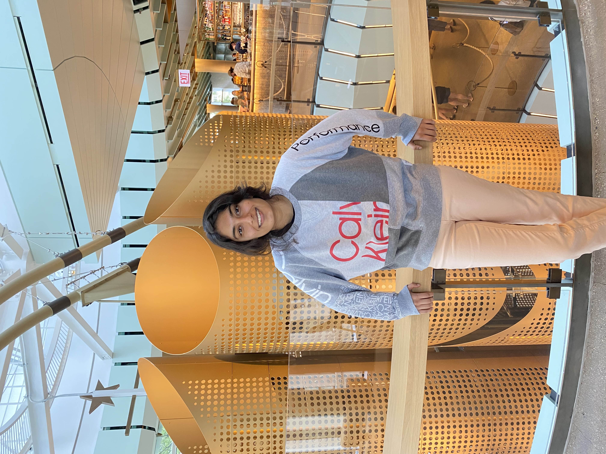
Tanvi
Bhave
My name is Tanvi Bhave and I am a current junior at TJ.
I joined Team Tiny House because I love communicating
with people and think it would be really fun to help
build/design a house. Outside of school I enjoy playing
basketball, baking, and listening to music.
Dhruv Kalsi, 11th grade next year, I want to join this
because I think it is a very cool and unique project. I
also think the environment is important and I think this
project could expand into something huge that could
really benefit a lot of people. Interest hobbies: cars,
F1, football, biking, engines, building stuff, playing
sports, and calling/hanging out with people!
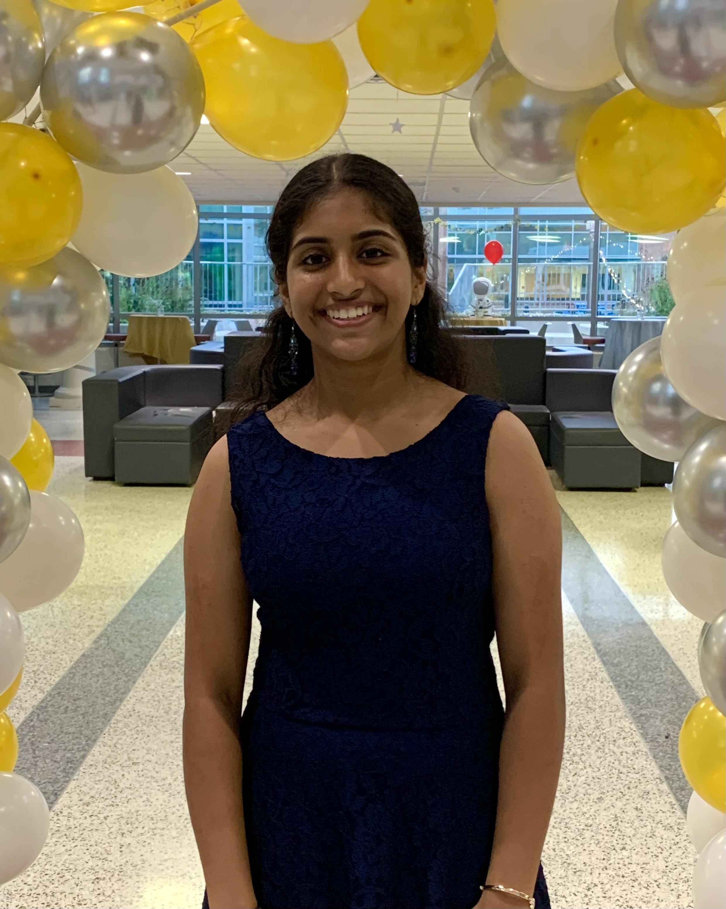
Srishty
Muthusekaran
I am a junior at TJHSST and I joined Team Tiny House
because I am interested in engineering and spreading
awareness of sustainable alternatives to conventional
technologies. I look forward to expanding my skillset and
working with the team to accomplish our goals!

I'm a sophomore, and I joined Team Tiny House
because I want to build my own house at some point in
the future as well as to help out the environment.
Energy
The Renewable Energy/Electricity /Smart Home (REESH) team’s responsibilities include powering the house, setting up internet, and integrating smart home technology.
Hey, I’m Jerry Mao and I’m a part of the class of 2023.
I like to disassemble electronics, play video games, and
when I find time, I’ll also paint some miniatures. I’d
love to see out tiny house team break some boundaries
with the amenities that we can squeeze into such a small
living space, and we’ll hopefully learn some lessons
regarding sustainable energy along the way!

My name is Liya Huang and I will be a junior in the fall.
I decided to join Team Tiny House because I have harbored
a long-time interest towards tiny houses because of their
efficiency and eco-friendly design. I enjoy engaging with
engineering videos as a pastime.

I joined I'm interested in engineering and
collaboration. My interests include playing video games
and sports.
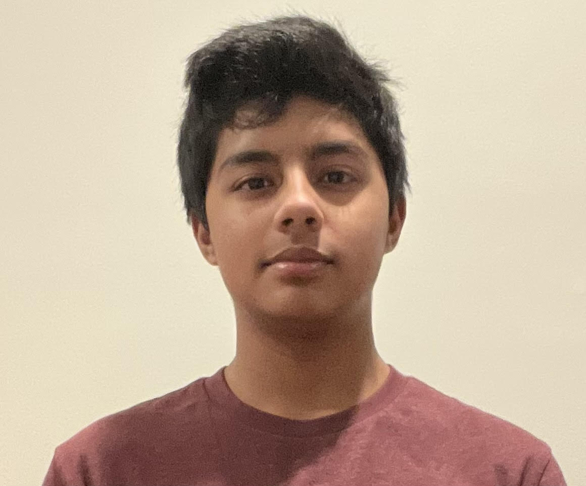
Dhruv
Chandna
Hey! I'm a freshman at TJHSST and I joined Team
Tiny House because I am interested in building my
engineering skills and applying them to help the
environment and to do something worthwile. My hobbies
include reading, playing the guitar, and playing tennis.

.
Hello! I am a sophomore, I joined Team Tiny House
because to gain experience in engineering, as well as
work with a great team. Outside of Team Tiny House, I
enjoy learning about computer science and am also a
member of the TJHSST cross country and track teams.
.
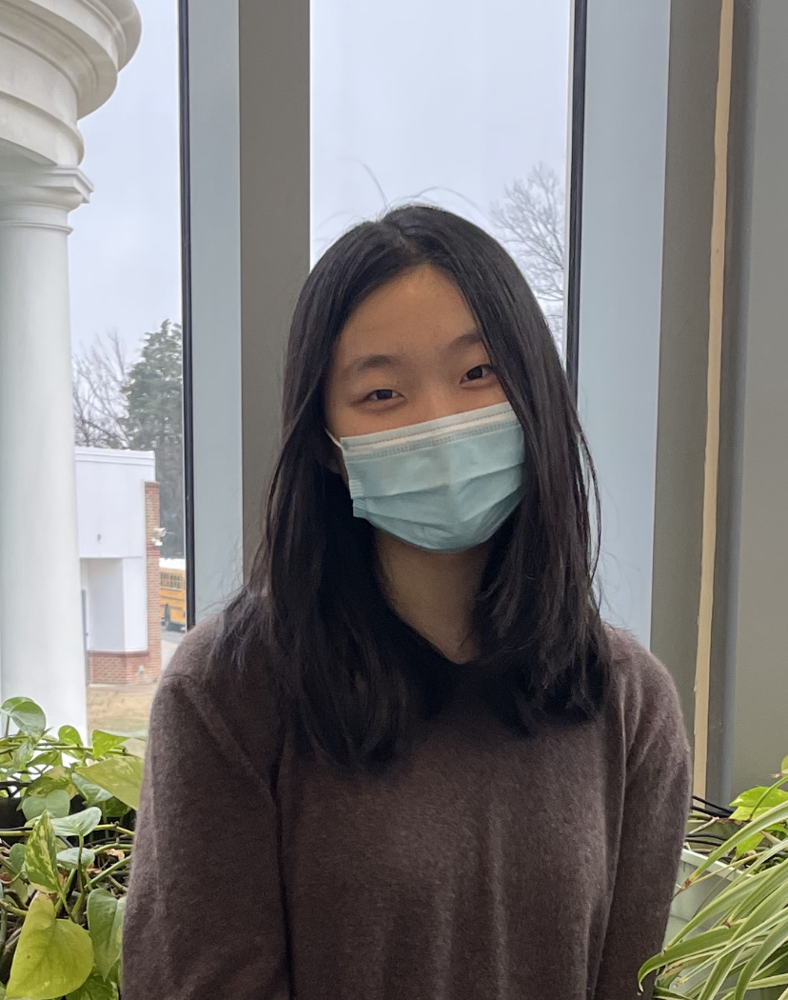
Stephanie
SOng
My name is Stephanie Song. Next fall, I will be a Junior
at TJHSST. I joined Team Tiny House because I like
building things and tiny houses seem cool.
Systems
The Systems team is responsible for designing and setting up the water and heating/cooling systems for the tiny house. We take care of plumbing, water collection, waste management, insulation, ventilation, and temperature control.
Hey! I’m the sophomore Systems Subteam lead that loves
robotics, space, environmental tech. I’m excited to be on
Team Tiny House to help educate people about green housing
make cool things doing what I love.
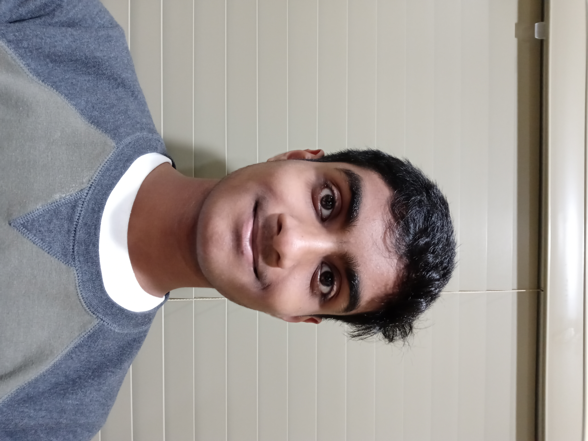
Akshay
Vellore
Hello! I am Akshay Vellore, a student in the class of
2023, and I joined Team Tiny House because I really
liked the idea of helping to create such a new type of
home, especially the technical stuff like
heating/cooling. As a student, I am really interested in
physics, statistics, and computer science, but outside
of the classroom I really enjoy running and making
origami! I can't wait to start work on this amazing
project!
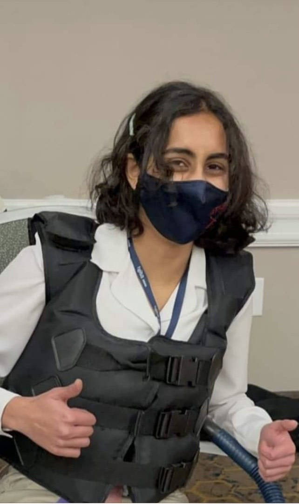
Anusha
Das
I’m a Sophomore and I joined Tiny House because I
believe it’s up to our generations to save the planet
and imagine all the homes we could potentially provide!
My favorite things to do are eat lunch with my friends,
volunteer, and play field hockey.
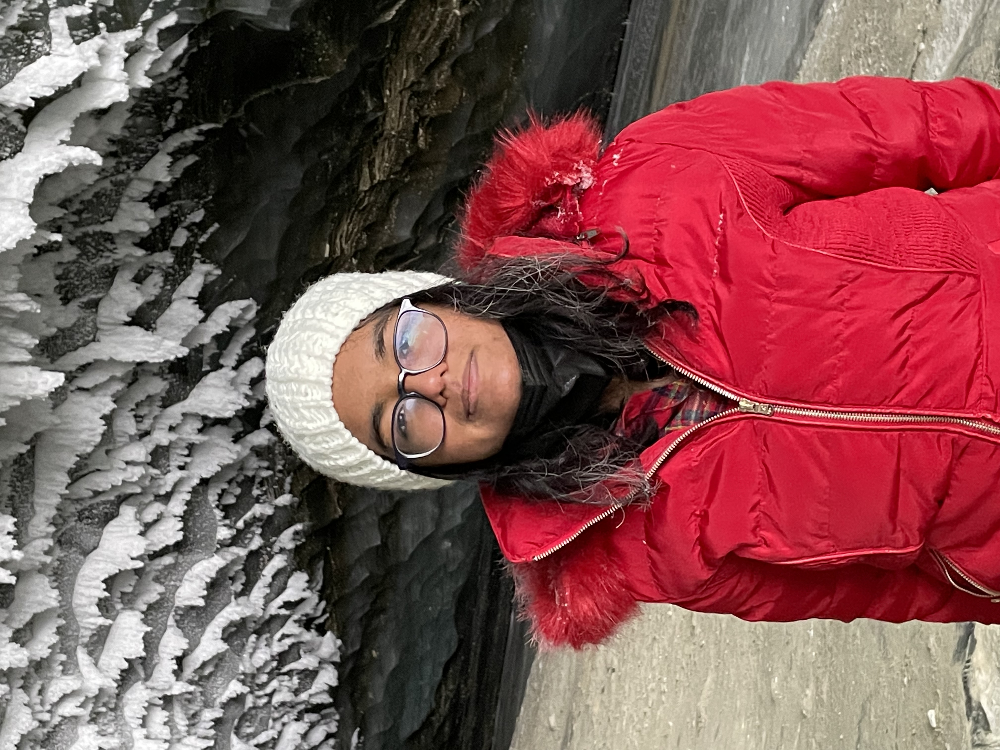
Sanjana
Bandaru
My name is Sanjana Bandaru and I will be a junior this
fall. I joined Team Tiny House because of my interest in
architecture, engineering, being environmentally friendly.
When I'm not doing homework, I'm listening to
music, reading books, or dancing.
read more
read more
Structural Engineering
The Structural Design team drafts the blueprints of the tiny house and makes sure the house meets code.
I am currently a sophomore. I joined Team Tiny House
because I am interested in structural and interior design.
I enjoy debate and tennis.
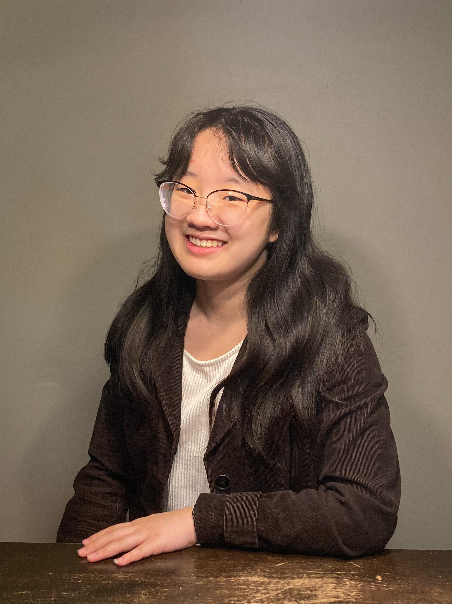
Holly
Xue
I'll be a junior in the upcoming 2022-2023 school
year. I'm very excited to be a part of this team
working to better to help people while also having a great
engineering experience. In my free time, I enjoy swimming,
listening to music, and playing video games.

This year I am a junior. I decided to join because project
Team Tiny House piqued my interest, especially since I
have always been interested in this subject and
didn't want to miss the opportunity. I have an
interest in engineering and CS, and my hobbies are
knitting, reading, and recently I've picked up
learning how to skateboard.

I am a sophomore and I joined Team Tiny House because I
LOVE to build things and have always been interested in
modular design. Outside of engineering I love to swim,
cook and backpack.

Hi, I'm Claire Wang, and I'll be a senior next
year! I joined Team Tiny House because I love living on
this Earth and want to do all that I can to protect it.
Outside of Team Tiny House, you might find me
birdwatching, playing piano, reading a book, or learning
a language.

Hey! I'm a junior and I joined Team Tiny House
because I have always wanted to find ways to directly help
people through engineering, and I want to expand my
knowledge about STEM through hands-on activity.
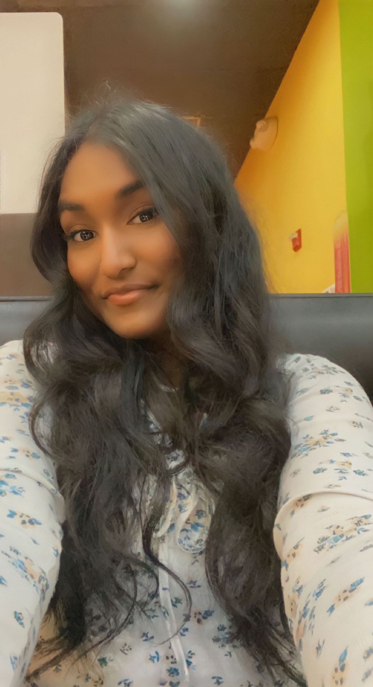
Prajakta
GADHAMSETTY
My name is Prajakta Gadhamsetty, and I will become a
senior next year at TJHSST. I love reading dystopian
novels and playing basketball! I joined this initiative
because I wanted to help those in need, and deemed that
this project would be a great way to do so. I hope that
I can gain a lot of new experiences and help people
throughout this journey!

I am a sophomore and I joined Team Tiny because it
involves things that I enjoy and care about and seemed
like a great opportunity to learn something new.
Interior Construction
The Interior Construction team designs and furnishes the interior of the Tiny House to get the most out of a small space. Our responsibilities include the kitchen, storage cabinets, loft, and the lounge area.
I'm a sophomore and I joined to innovate new
environmentally friendly technology. I will save the world
one robot at a time. I'm interested in Mechatronics
and Economics, and I enjoy programming, robotics, and
rocketry. (amithp.com)
I am a freshman and Interior Construction Subteam Lead.
I joined Team Tiny House to actively contribute towards
a more sustainable future for all of us and to encourage
more people to have a positive influence on the
environment! In my free time, I enjoy crocheting,
reading, gardening, biking, and playing with my cats and
dog.
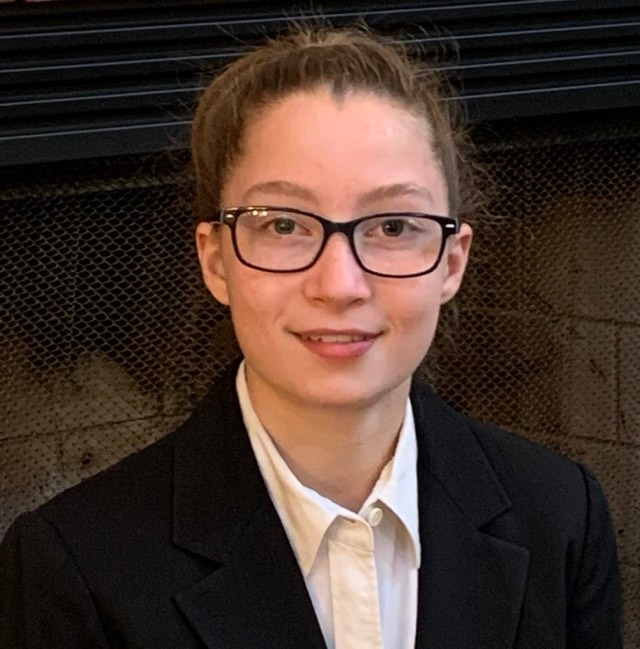
Dora
Bowen-Glazeroff
I am a sophomore and I joined Team Tiny House because I
am interested in architecture, problem solving, and
design. I am really excited to create something that has
a concrete impact on our community!

Hello! I am a junior this year and I joined Team Tiny
House because I recognize the need to take action against
the Climate Crisis with regards to the future. I am so
excited to be joining a strong community where we will all
be utilizing creativity and engineering skills to build a
final product.
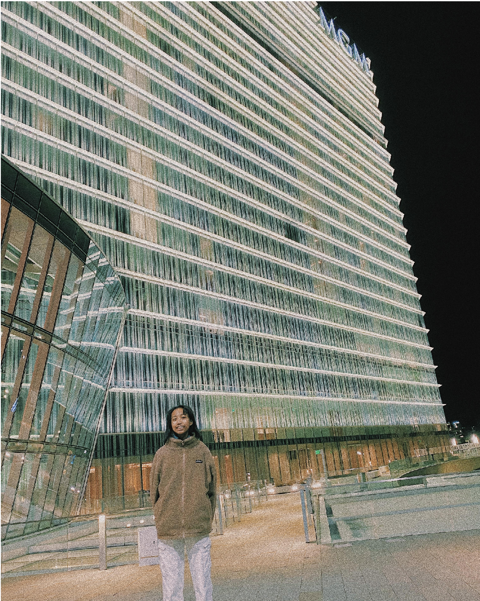
Misha
Speede
Misha Speede is going to be a Sophomore in the upcoming
fall year. She joined Team Tiny House so she could
innovatively experiment in CAD, design sustainable
eco-friendly furniture, and make aesthetic tiny houses
with a team! Outside of school, she loves to walk around
her neighborhood or play Minecraft.

Hi! My name is Lani Horcharoen, and I’ll be a senior at TJ
next fall. I joined Team Tiny House because I remember
seeing those videos on Youtube about sustainable tiny
living spaces and wanted to see if the club could recreate
that (or possibly make it even better!) My hobbies include
skateboarding, gaming, and reading :)
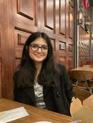
Naisha
Patel
My name is Naisha Patel and I'm going to be a Junior
next fall. I joined Team Tiny House because I love
building and design and want to help the environment. In
my free time I love to read and play chess with my dad.

My name is Dylan Han and I joined because I thought it
would be a cool opportunity to enhance my technology
skills. Next year I’ll be a junior, so I want to try new
things before the flood arrives. Finally, I like coding
and hands-on tech projects, so I’m sure this’ll be the
perfect event!
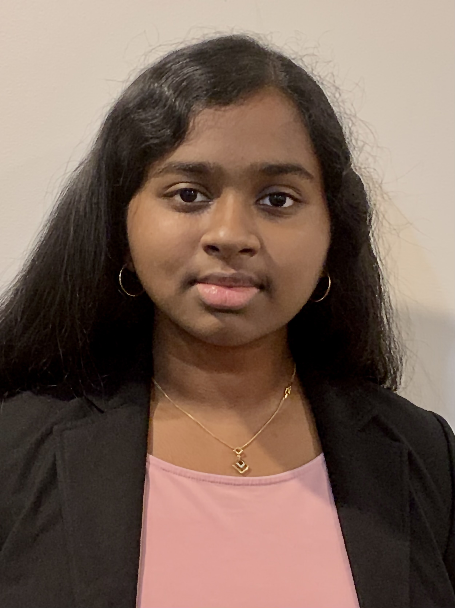
Oviya
Jeyaprakash
I'm currently a junior and I joined Team Tiny House
because of I have a passion for engineering and wanted
to apply my technical skills to this amazing project. In
my free time, I draw digital art and participate in
color guard.